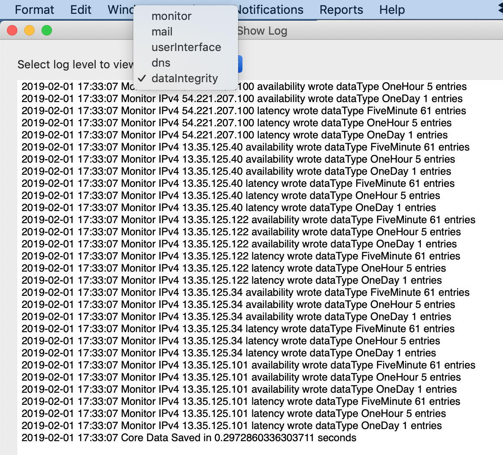

Show logs
The Help -> Show Logs menu item is another diagnostic designed to help troubleshoot problems with Network Mom Availability itself. Logs are in one of five categories:
Monitor (related to sending and receiving pings)
Mail (related to sending email)
userInterface (related to opening and closing windows)
dns (related to IP address and hostname queries)
dataIntegrity (related to saving and restoring data)
Network Mom Availability saves the most recent 1000 log messages of each type since the last application restart.

https://networkmom.net feedback@networkmom.net Copyright 2019 Network Mom LLC